Engineering Intelligent Systems, From Firmware to Reality.
I build and integrate embedded systems, firmware, robotics, IoT platforms, and edge AI solutions — connecting hardware and software to solve real-world engineering challenges.
Firmware Development · Hardware Integration · Robotics · Computer Vision · Edge AI
Areas of focus: Firmware Development, Hardware Integration, Robotics, Computer Vision, Edge AI, IoT.
01
01 / ABOUT ME
About Me
I’m an Embedded Systems Engineer with more than five years of hands-on experience developing firmware, integrating hardware, and building intelligent connected systems.
My work combines low-level embedded programming, sensor interfacing, communication protocols, robotics, computer vision, and edge AI. I enjoy working across the full engineering lifecycle — from understanding hardware constraints and designing system interfaces to implementing algorithms, debugging complex failures, and validating complete systems.
I focus on practical engineering, reliable implementation, and solutions that connect physical devices with intelligent software.
01
Embedded Engineering
Firmware, microcontrollers, peripheral interfaces, communication protocols, and hardware integration.
02
Intelligent Systems
Computer vision, machine learning, edge inference, and real-time perception.
03
Robotics and Connectivity
Sensor integration, autonomous-system components, IoT connectivity, and system-level integration.
02
02 / TECHNICAL EXPERTISE
Technical Expertise
The tools and topics I use in my projects and day-to-day engineering work, linked to where each group is put into practice.
A machine-vision-based system designed to identify trading cards and support automated sorting through card recognition, OCR, variant classification, and backend integration.
Problem
Sorting large trading-card collections by hand is slow, and similar printings are easy to confuse.
Approach
A camera captures each card; OCR and variant classification identify it, a card database lookup confirms it, and the result drives the sorting mechanism.
An integrated mobile robotics platform combining embedded control, onboard sensing, and perception components for autonomous-system development.
Problem
Developing autonomous behaviour needs a dependable mobile base where sensing, control, and perception can be integrated and tested together.
Approach
An off-road RC chassis is fitted with a mounting frame for a top LiDAR, a forward ZED Mini stereo camera, extra cameras, and the onboard control electronics, so perception and control can be developed on real hardware.
Clips from autonomous-driving and legged-robot simulation work.
Simulation18 s clip
Urban Driving Simulation with CARLA
An autonomous vehicle in the CARLA simulator keeping its lane, holding distance behind traffic, and waiting at the intersection before moving on.
Simulation10 s clip
Spider Robot Simulation with Isaac Sim
Four-legged spider robots being trained to walk, running in parallel in NVIDIA Isaac Sim.
05
05 / EXPERIENCE
Professional Experience
January 2025 – Present
Senior Embedded Systems Engineer
Surge Robotics · Sri Lanka
Lead and contribute to the development of embedded systems and integrated engineering solutions.
Support project planning, implementation, and technical execution across embedded-system projects.
Work across firmware, hardware integration, robotics, IoT, and intelligent embedded applications.
January 2024 – January 2025
Embedded Systems Engineer
Surge Robotics · Sri Lanka
Developed and integrated embedded-system solutions across hardware and software components.
Contributed to project planning, implementation, prototyping, and system testing.
Worked on embedded firmware, sensor integration, and connected-system development.
December 2022 – January 2024
Embedded Systems Engineer
MechDev Lab · Sri Lanka
Developed embedded solutions involving microcontrollers, firmware, and hardware integration.
Contributed to engineering development, prototyping, and implementation of embedded applications.
Supported system integration and testing of hardware and software components.
06 / ENGINEERING APPROACH
How I Approach Engineering
Engineering involves both hardware constraints and software behaviour, and validation matters as much as implementation.


01Understand the problem
02Define system requirements
03Select hardware and architecture
04Implement firmware and software
05Integrate sensors and subsystems
06Test, measure, and debug
07Validate and document
07 / CONTACT
Let’s Build Something Meaningful.
I’m interested in engineering challenges involving embedded systems, firmware, robotics, IoT, and intelligent edge applications. If you are working on a technically challenging project or would like to discuss a relevant opportunity, feel free to get in touch.